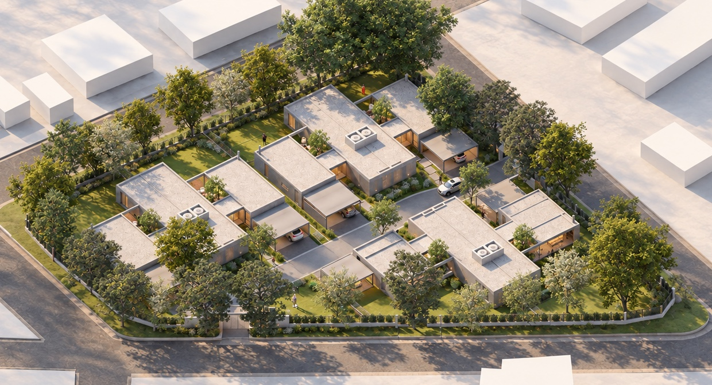

El valor de estar cerca.
6 casas
-
4.237m²
De predio verde
-
6
Casas
De una sola planta, con materiales de primera calidad y terminaciones de alta gama.
-
550m²
Lotes
Entre 500 y 750 m², rodeados de amplias áreas verdes en un entorno seguro.
-
225m²
Por casa
Superficie total, con ambientes amplios en una sola planta.
-
1.000m²
Áreas comunes parquizadas
Atributos principales
-
Estacionamiento de cortesía
Lugares para visitas dentro del barrio.
-
Parquización y espacios verdes
Los árboles adultos del borde quedaron donde estaban.
-
Seguridad y cámaras
Monitoreo automatizado del conjunto.
-
Control de acceso inteligente
Acceso controlado para propietarios y visitas.
-
Servicios subterráneos
Infraestructura integral enterrada, sin tendido aéreo.
-
Expensas eficientes
Seis casas reparten el mantenimiento de las áreas comunes.
-
En el corazón de Villa Allende
A pocas cuadras del Villa Allende Golf.
-
Casas de una planta
Ambientes amplios, sin escaleras.
-
Patios propios extensos
Entre 500 y 756 m² de terreno por casa.
-
Dos ingresos
Para entrar y salir sin cruzarse.
Atributos principales de cada casa
-
Cochera doble
-
1 dormitorio con vestidor y baño en suite
-
2 dormitorios secundarios
-
2 baños / 1 toilette
-
Cocina / comedor / living
-
Lavadero / tender
-
Galería con asador
-
Espacio de guardado / depósito
-
Calefacción central
-
Aberturas de vidrio doble

Casa N
Consultar- Orientación del fondo
- Noreste
- Terreno propio
- 660 m²
- Superficie cubierta
- 225 m²
- Dormitorios
- 3, uno en suite con vestidor
- Cochera
- Doble, bajo losa
- Planta
- Ficha técnica
Vivir cerca de todo.
- Villa Allende Golf1min
- Centro de Villa Allende5min
- Aeropuerto10min
- Córdoba capital25min
Coordenadas del predio: 31°17'08"S 64°17'20"O.

Quién lo hace
Contacto
Dejá tus datos y te escribimos con valores, forma de pago y disponibilidad actualizada. Si preferís, escribís directo por WhatsApp a cualquiera de los dos teléfonos.